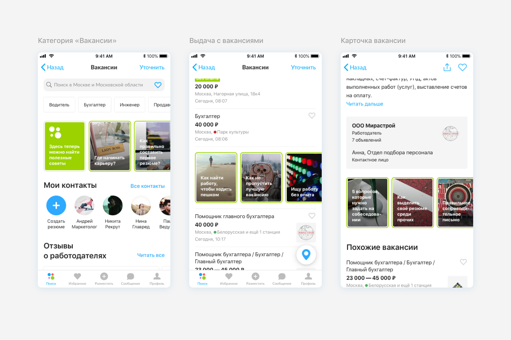
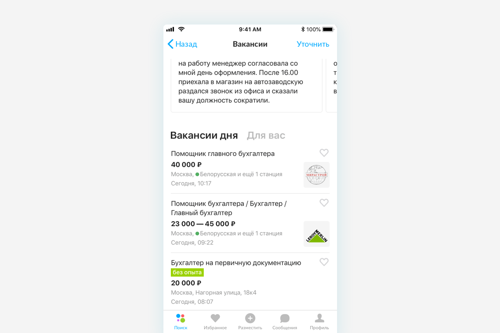

Solution
Copy friend's CV
Usually, the applicant begins to realize the need for employment immediately after graduation (at the time of graduation). He is overcome by the fear of being out of work at an early stage.
The social factor strongly influences the definition of a career. So there is a hypothesis that access to the resume of friends from the contact list can help the decision to choose a role.

The preparation of the CV is a huge pain for new applicants. It requires a lot of effort and time and at the beginning of the path has little effect on the result. But the most part of the contact those years are fellow students with similar job requests. Thus, the copying CV of friends can help in compiling own.
Contextual tips
Some applicants step into this experience for the first time. So there is a hypothesis that useful context tips can help:
- to choose the right vector at each stage of the funnel
- to help in advance to find the answer to the emerging issue
- to act more confidently in different situations.

Fear of interviews causes anxiety and makes you doubt your own competence. It will be useful to read a couple of tips before going to an appointed interview.
Employer reviews
There is a huge process of finding potential employers. A significant part of this time is spent on the evaluation of a potential company. Feedback from job seekers about the employer can help at this stage to weed out unscrupulous companies.

Also, a large number of refusals affect the process of finding a potential job, because the subsequent depression reduces energy resources.
Response timeout
Applicants can pre-tune to the appropriate expectations by being informed about the time of the decision duration of the employer.

Personalization
Also, Avito can save previously entered requests and offer up-to-date suggestions in the root category to keep applicants in the context.
